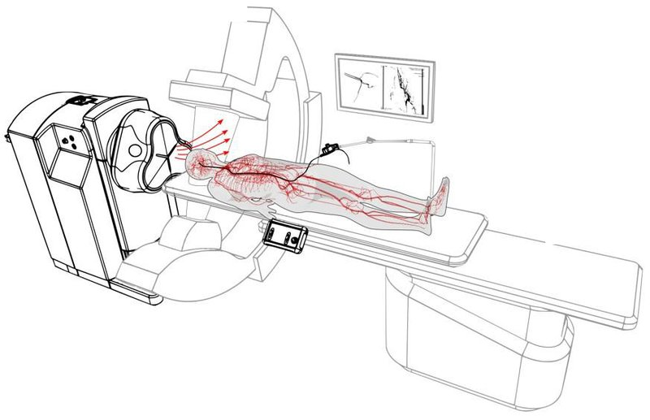

Magnetic navigation · helical_dreyfus2024
Helical magnetic
Dexterous helical magnetic robot (articulating magnetic tip + helical surface)

1 / 5


- Family
- Magnetic navigation (magnetic-navigation)
- Devices
- own helical catheter-like robot; a news summary says under 1 mm diameter (secondary, unverified)
- Degrees of freedom
- N.R.
- Push
- Magnetic
- Twist
- Field direction
- Tested up to
- Animal
- Sim-to-real
- None found — No simulation-trained controller found for this robot.
Testing
- Highest level
- Animal
- What was tested
- models of human vasculature and blood vessels of a live pig (abstract); counts N.R.
- Key numbers
- N.R.
Mechanism
- Push (translation)
- magnetic
- Twist (rotation)
- rotation turned into advance by helical ridge on wall contact
- Device range
- N.R.
- Target anatomy
- neuro (aortic arch to millimetre-sized brain arteries; models and live pig)
Sensing and interface
- Force sensing
- N.R.
- Leader and haptics
- N.R.
- Imaging
- N.R.
- Sterility
- N.R.
Size
- Footprint (mm)
- N.R.
- Mass (kg)
- N.R.
Simulation
- Simulation model
- N.R.
- Sim-trained controller
- none found at abstract level
Versions
- Lineage
- Sci. Robotics 2024; commercial successor is Nanoflex (A4 scope)
Sources
- Dexterous helical magnetic robot for improved endovascular access · Science Robotics, 2024 · doi:10.1126/scirobotics.adh0298 [dreyfus2024_dexterous]
Notes
- Notes
- Accepted version exists at research-collection.ethz.ch (bitstream 659728); needs manual download.
This record
- Read level
- abstract — abstract / web
- Picture
- dreyfus2024_dexterous accepted version (zenodo.org/records/10813540) Fig. 2 centre (eMNS beside the patient table, C-arm, advancer) ↗ — licence: CC BY 4.0 (Zenodo record licence of the accepted manuscript; ETH Research Collection lists In Copyright for the same item); grade B
- Picture changes
- native extract (1332 px), circular inset fragments around the edge painted white, crop
- Found by
- actuated-tip: Search of actuated-tip and magnetic devices.
- Data
- JSON · YAML:
records/robots/helical_dreyfus2024.yaml - Correction
- Suggest a correction [repository not created yet]